Player mobility: the body, its modes and its moves
The player is one Jolt capsule that walks, jumps, pulls up onto ledges, climbs, swims, glides, swings on a
rope, rides boards and bikes, and goes limp. Each of those is a mode in a small state machine that reads a
PlayerIntent (never the keys), moves the capsule through PhysicsWorld, and writes a
PlayerPose. Everything that draws, sounds or reacts to the body reads that pose.
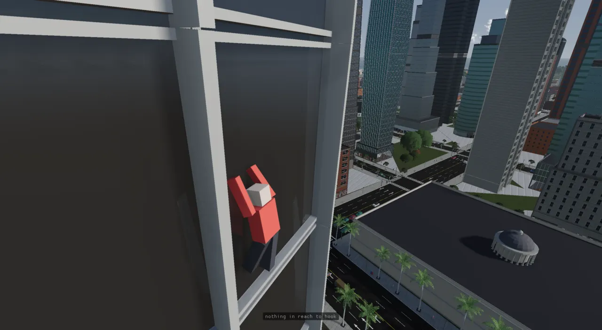
The problem
A walking controller is easy: a capsule, a desired horizontal velocity, gravity. The trouble starts with everything else Glenn asked for in October 2026: a jump that doesn't get stuck on rock, ledges you can pull up onto, walls you can climb "like Breath of the Wild", water that holds you up, a parachute and a wingsuit, a Spider-Man grapple, boards, bikes, ragdolls, a watch on your wrist. Each move has its own physics, its own way in and out, and its own look. Each one also has to crash in a way that agrees with the others.
Until late October all of this lived in PlayerSystem: 1906 lines, one
~470-line fixedUpdate running ten modes in a fixed order over ~100 shared members, with every mode
reading the keys itself (ADR-0246). The current shape separates four things:
- what the player wants (
PlayerIntent, filled from the input map once a fixed step); - what the body is doing (
PlayerBody: oneBodyModeobject per way of moving); - what the hands hold (
PlayerHands: the tool slot, the grapple's hook and rope); - what it looks like (
PlayerPose, read by the body, arms, sound, particle and watch systems).
One step, end to end
The fixed step. The input map feeds an intent; PlayerBody::step runs the interrupts, the
hands, the current mode's ways out and its step, then publishes the pose. The modes move the capsule through
PhysicsWorld. Particles are requested by name from PlayerBody::effects inside
publish() (dashed); the rest read the pose.
The capsule behind PhysicsWorld
The body is a Jolt CharacterVirtual: a kinematic capsule moved by collide-and-slide, not a simulated rigid
body, so it steps up kerbs and stairs instead of bouncing off them. Since ADR-0012 the engine never sees a
JPH:: type; PhysicsWorld is a pimpl handing out opaque ids (CharacterId). The
player capsule is half-height 0.6 plus radius 0.3 (1.8 m), with the eye 0.7 above its centre (1.6 m)
(ADR-0239; it was 1.4 m before, and the third-person body made the player look like "a child next to the other
agents").
There are two ways to move it, and the modes pick one:
moveCharacter: the caller gives a horizontal velocity; physics owns the vertical axis (gravity, sticking to the floor on the way down a kerb, the ground's own velocity in a lift). Walking and boarding.moveCharacterFree: the caller owns all three axes, no gravity, no floor-stick. Swimming, climbing, ladders, the mantle path, gliding and the rope, where the mode computes the whole velocity itself.
A jump can't be a velocity passed in, because moveCharacter zeroes vertical speed on the ground. It is
staged and spent by the next move:
bool PhysicsWorld::jumpCharacter(CharacterId id, Real speed) {
if (!impl || id >= impl->characters.size()) return false;
JPH::CharacterVirtual* ch = impl->characters[id].controller.GetPtr();
if (!ch || speed <= 0.0) return false;
// Grounded only: the ground state is the whole gate, so no caller has to
// track "am I allowed to jump" (and none can get it wrong).
if (ch->GetGroundState() != JPH::CharacterBase::EGroundState::OnGround)
return false;
impl->characters[id].pendingJump = static_cast<float>(speed);
return true;
}
void PhysicsWorld::launchCharacter(CharacterId id, Real upSpeed) {
if (!impl || id >= impl->characters.size() || upSpeed <= 0.0) return;
if (!impl->characters[id].controller) return;
impl->characters[id].pendingJump = static_cast<float>(upSpeed);
}
jumpCharacter refuses anything but OnGround. That was the "jump sometimes gets me stuck"
bug: on a slope over the 50° walkable limit Jolt says OnSteepGround, so every press was refused while
sliding on a rock face (measured, and pinned by the test the_physics_jump_is_refused_on_steep_ground).
The player now decides when a jump may happen in its own JumpGate and calls the ungated
launchCharacter (ADR-0228).
Other queries the modes use: characterGroundState (OnGround / OnSteepGround / NotSupported / InAir),
characterGroundNormal, characterFitsAt (a capsule overlap test: is there room to stand
there?), setCharacterHeight (crouch; standing up can be refused under a ledge),
castRayHit (point, normal, and whether the body is dynamic: a crate can't be climbed), and the ragdoll
calls addRagdoll / ragdollPart / ragdollSpeed.
The intent: what the player wants this step
struct PlayerIntent {
bool active = false; // the body is the player's (the camera rides it); false: the freecam has the keys
Real forward = 0; // the stick: forward (+) / back, -1..1 -- 0 while not active
Real right = 0; // ...right (+) / left
bool run = false; // the buttons as held (raw: a mode asks for `active` as well where it matters)
bool jumpHeld = false;
bool crouchHeld = false;
// ONE-SHOTS staged by the frame (a press read in a fixed step would fire twice on a two-step frame). A mode that
// spends one clears it; one nobody spends waits for the next step.
bool jump = false;
bool limp = false; // go limp (G, `ragdoll`)
bool fire = false; // the trigger's press, with the grapple in hand...
bool fireHeld = false; // ...and held (let go and the rope goes)
Entity playTarget; // E on the swing (playKind 1) or the monkey bars (2)
uint64_t playKind = 0;
// THE VIEW: its eye and which way it looks (the fly camera, which is the heading in either view)
Vec3 eye{0, 0, 0};
Vec3 look{0, 0, -1};
Vec3 lookRight{1, 0, 0};
};
Two details matter. One-shots (a jump press, G for limp, the trigger) are caught on the per-frame press edge and handed to exactly one fixed step: reading a press inside a fixed step would fire twice on a frame that runs two steps (a double-height jump). And a one-shot that no mode spent is handed back and waits for the next step:
void PlayerSystem::fixedUpdate(FrameContext& ctx) {
const Real dt = ctx.clock.fixedStep();
body_.tune.load(ctx.settings); // live: the panel and `set movement.<key> <value>` both write the settings
ctx.world.each<Transform, CharacterController, ControlledBy>(
[&](Entity e, Transform& t, CharacterController& cc, ControlledBy&) {
playerEntity = e;
// Seated in a vehicle (ADR-0059): VehicleSystem owns the pose and the
// chase camera owns the view, so on-foot movement is suppressed.
if (ctx.world.has<InVehicle>(e)) return;
// A PASSENGER (a bus): the carrier owns the position every step.
if (ctx.world.has<Passenger>(e)) return;
// SEATED on a piece of furniture (InteractionSystem): the body stays where it stood; the camera sits.
if (ctx.world.has<Seated>(e)) return;
if (cc.characterId == INVALID_CHARACTER) return;
PlayerIntent in = intent(ctx);
BodyStep s{ctx.world, ctx.settings, e, t, cc, physicsSys.physicsWorld(), in, dt};
body_.step(s);
// what the step did not spend waits for the next
jumpRequested = in.jump;
limpRequested_ = in.limp;
grappleFire_ = in.fire;
playTarget_ = in.playTarget;
});
}
Because nothing below this reads keys, anything that can fill a PlayerIntent drives the same modes:
a rebinding, a probe, the trace harness's scripted pad, and potentially a possessed agent or a replay.
The state machine
A BodyMode is one way of moving, holding its own state (the climb's wall normal, the rope's length, the
board's heading). PlayerBody owns one instance of each and a pointer to the current one; changing mode
is enter(m), which only swaps the pointer.
The twelve mode objects (parachute and wingsuit are two instances of one GlideMode). Blue:
the air group, gold: the wall group, teal: riding and play. Solid arrows are enter() calls found in
player_modes_foot.cpp and player_modes_gear.cpp; the gold dashed line is the impact rule
sending a mode limp (on foot, the glides, the grapple and the board report to it). A hook can also bite under a
canopy (parachute to grapple), and a rope reeled up to an edge pulls up onto it (grapple to mantle, dashed). Interrupts (ladder, water, limp, teleport) are
checked over every mode before the mode runs.
class BodyMode {
public:
virtual ~BodyMode() = default;
virtual const char* name(const PlayerBody& b) const = 0; // for `move?`
virtual BodyGroup group() const = 0;
// The ways out taken before the step: b.enter() another mode and that one is stepped (and asked) next.
virtual void leave(PlayerBody&, BodyStep&) {}
virtual void step(PlayerBody& b, BodyStep& s) = 0;
// What the pose says in this mode (the shared part is written first, by PlayerBody).
virtual void pose(const PlayerBody& b, const BodyStep& s, PlayerPose& p) const = 0;
// Hands free for something else: 2 both (the gun), 1 one (the watch), 0 none.
virtual int handsFree(const PlayerBody&) const { return 0; }
// Can the grapple be aimed and fired from here? (Not with both hands on a ledge, nor limp.)
virtual bool canAim() const { return true; }
// Is the velocity worth publishing? (Hanging on a wall or a ledge the pose keeps the last one.)
virtual bool movesFreely() const { return true; }
// THE IMPACT RULE's numbers for this mode (PlayerBody::impact): the speed it can lose in a step along `dir`
// (unit, the way it meant to go) and stay up, and how it is thrown when it can't.
virtual Real impactTolerance(const PlayerBody& b, const Vec3& dir) const;
virtual Vec3 thrown(const Vec3& meant, const Vec3& got, const Vec3& dir) const;
};
Besides step and pose, a mode answers questions other code would otherwise have asked
with a switch over modes: how many hands are free (the gun, the watch and the light read it), whether the grapple can
be aimed from here, and the mode's numbers for the impact rule. Each mode also names a
BodyGroup (Ground, Water, Wall, Air, Riding, Play, Limp), the parent in a hierarchy meant for rules over
a family; at this commit the groups are declared but no rule reads them yet (ADR-0246).
regrab = std::max(Real(0), regrab - s.dt);
landed = std::max(Real(0), landed - s.dt * 3.0);
// THE HANDS: the grapple's aim, and a shot (not with both hands on a ledge)
if (mode_->canAim()) hands.aimAndFire(*this, s);
// THE MODE: its ways out first (the mode they lead to steps this same step), then its step
for (int hop = 0; hop < 4; ++hop) {
const BodyMode* was = mode_;
mode_->leave(*this, s);
if (mode_ == was) break;
}
mode_->step(*this, s);
finish();
}
Why leave() runs before step(): some exits must happen before the old mode moves
the body. On foot, sinking into deep water, pressing E at a swing, or holding a board on the ground hand over to
the new mode, and that mode steps this same step, so there is no frame of walking on water or of a walk cycle
under a skateboard. Exits that are consequences of the move (let go of the wall, landed the chute, slammed into a
wall) happen inside step() and take effect on the next step.
| Mode | How it moves the capsule | Ways in | Ways out |
|---|---|---|---|
| OnFoot | moveCharacter, JumpGate, air momentum | default; every exit | see the diagram |
| Swim | moveCharacterFree, buoyant spring | water deeper than 1.3 m at the feet | shallower than 1.05 m and touching; or 1 m clear of it |
| Ladder | free, along the rails | LadderSystem adds Climbing | top, foot, jump |
| Mantle | free, along a precomputed path | tryMantle (ground, air, wall top, rope) | done, or blocked by 0.35 m |
| Climb | free, in the wall's basis | tryGrab | crouch, kick, tired, foot of the wall, lost wall, top |
| Parachute / Wingsuit | free, parachuteStep / wingsuitStep | tryDeploy | crouch cuts away; landing; impact; hook |
| Grapple | free, ropeStep | attachRope when the hook bites | let go of fire; ground with slack rope; mantle; impact |
| Board | moveCharacter, boardStep | skateboard/scooter in hand, on the ground | hand changes; bail (impact) |
| Swing / Bars | setCharacterPosition on the seat / under the bar | E (the interact broker) | jump, crouch, off the end |
| Ragdoll | Jolt Ragdoll; capsule parked | goLimp | still 1.2 s, jump once slowed, water, fall net |
On foot: the jump gate, ledges and walls
OnFootMode::step is a priority list. With jump pressed on the ground, a ledge in front wins over a hop
(a pull-up). Otherwise the JumpGate decides whether a press launches:
JumpGate::Launch JumpGate::take(GroundState g, const Vec3& groundNormal, const MovementTuning& t, Real) {
Launch l;
if (buffered <= 0 || sinceLaunch < 0.25) return l;
const bool walkable = g == GroundState::OnGround || sinceGround <= t.coyoteTime;
const bool steep = g == GroundState::OnSteepGround;
const bool wedge = g == GroundState::NotSupported && wedged >= t.wedgedTime;
if (!walkable && !steep && !wedge) return l;
l.go = true;
if (!walkable) l.push = flat(groundNormal) * t.steepPush; // off the slope, not up it
buffered = -1;
sinceLaunch = 0;
sinceGround = 1e9;
return l;
}
The gate accepts walkable ground or a moment after leaving it (coyote time, 0.12 s), steep ground (pushed
off it at steepPush 2.5 m/s rather than up it), and a wedge (touching, unsupported, not falling
for 0.15 s). A press up to 0.15 s before landing is buffered. Every jump leaves at full speed (4.3 m/s, 1.2×
when running) and letting go while rising cuts the rise to 0.4: a one-frame tap rises 0.19 m, held 0.91 m. Glenn
asked for "hop if it's a short tap"; a cut means the take-off never waits on the press (ADR-0238).
In the air the order continues: a wall kick (a wall within reach along the way you move, the way you face,
or either side; not the same wall twice), then deploying a chute or suit, then grabbing a ledge or a
climbable wall you push at. In the air the keys only nudge what the body left the ground with
(airborneVelocity, 8 m/s²).
- Ledges (
findLedge): level rays for a wall in reach, a ray down behind its face for the top, a ray for floor a body's width in, thencharacterFitsAtfor room on top and on the way up. From standing a jump takes ledges up to 1.45 m; in the air, pushing at one, up to 2.1 m over the feet.MantleMoveis a path: rise level with the top at 3.2 m/s, then 0.2 s over. - Climbing: any surface too steep to walk (normal y below 0.64) down to a slight overhang (−0.35), not a dynamic body. The mode moves in the wall's basis, sticks at the chest with a ray each step, turns into inside corners and reaches round outside ones, pulls up at the top, and drains stamina (12 s; 2 per lunge; recovered on the ground).
Measured. The stuck jump was not crevices or gaps (those settle OnGround); it was
every slope over 50°. The fall net (FallRespawnTracker, 40 m below the last footing) used to cut every
tower jump short; it now fires only when a ray finds nothing below at all, since it exists for falling through the
world, not off it (ADR-0228, ADR-0229).
Water: buoyancy as a spring
SwimState floats the body when the water is more than 1.3 m over the feet and lets it stand again
under 1.05 m. Vertically the swimmer is a damped spring with quadratic drag, so a plunge keeps its speed, goes under
and bobs back:
Real swimVerticalStep(Real vy, Real centreY, Real floatY, bool rise, bool dive, Real dt, const MovementTuning& t) {
Real a = t.buoyancy * (floatY - centreY) - t.waterDamping * vy - t.waterDrag * vy * std::fabs(vy);
if (dive) a -= t.buoyancy * 1.2 + 4.0; // kick down, against the float
else if (rise) a += 6.0; // kick up: out past the float line, to look over a pool's edge
const Real v = vy + a * dt;
return dive ? std::max(v, Real(-2.0)) : v;
}
Off the 6 m board the body's centre went 0.9 m below its float line and came back up past it once before settling
(ADR-0228). Horizontally the stroke surges with each arm's pull (strokeSpeedScale, averaging 1);
still, the body treads water upright, moving it tips into the crawl (swimStroke, eased). In
ADR-0244 a swimmer teleported out of a pool stayed "swimming" in the air, so the rule now also leaves the water
when it is a metre or more below.
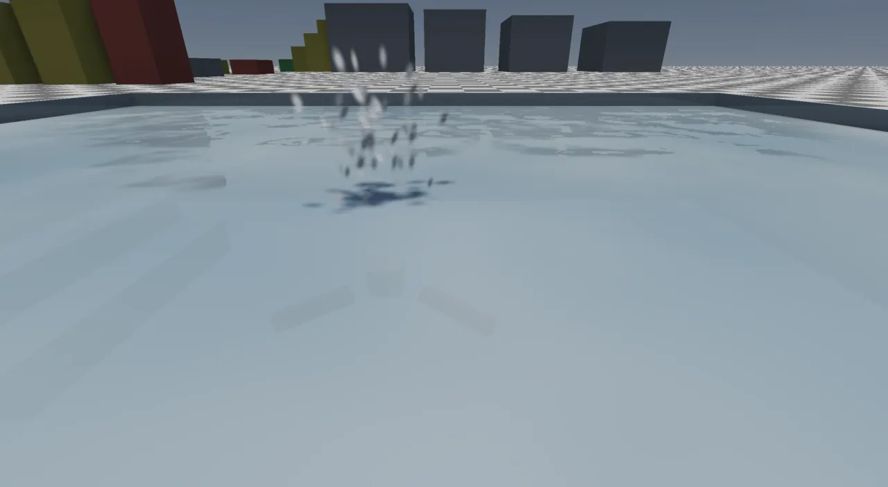
splashVy_), the
"splash" effect drawn with the glow sprite after ADR-0244.In the air: parachute and wingsuit
Gear lives in tool slots (parachute 4, wingsuit 5). With either in hand, jump in the air with at least 4 m clear
under the feet opens it (tryDeploy); in the wingsuit, jump opens its parachute; crouch cuts away. Both
are one GlideMode class integrating a shared GlideFlight.
- Parachute (
parachuteStep): the canopy turns toward where you look at up to 70°/s and eases the velocity toward 8 m/s ahead and 4.5 down (W: 12/7; S flares to 4/2), filling over 0.7 s. Measured off the 72 m tower: 4.50 down, 8.00 ahead. - Wingsuit (
wingsuitStep): flown by the look, pitch held to −60…+25°.
if (speed > 1e-4) {
// LIFT turns the way toward the facing without doing work, but it grows with the square of the speed:
// at the stall speed it can just hold the body up (g), slower it can't, so a slow suit falls and a
// fast one carves. What turning costs (induced drag) follows from how hard it turns.
const Vec3 dir = out * (1.0 / speed);
const Real c = std::clamp(dot(dir, f), Real(-1), Real(1));
const Real angle = std::acos(c);
if (angle > 1e-5 && c > -0.3) {
const Real liftMax = 9.81 * (speed / t.suitStallSpeed) * (speed / t.suitStallSpeed);
const Real phi = std::min(angle * (1.0 - std::exp(-dt * t.suitTurn)), liftMax * dt / speed);
const Vec3 perp = normalize(f - dir * c);
out = (dir * std::cos(phi) + perp * std::sin(phi)) * speed;
const Real lift = speed * phi / dt; // the acceleration it took
const Real induced = t.suitInducedDrag * lift * lift / (speed * speed);
out = out * std::max(Real(0), 1.0 - induced * dt / speed);
}
}
Three wrong wingsuits first (ADR-0229): lift that converted gravity into
forward speed (83 m/s, energy from nothing); a constant induced drag (stuck at 6 m/s from rest); no induced drag (hung
in the air at 12 m/s pitched up). The model that held: lift only rotates the velocity, is capped by speed²
(it just holds you up at the 14 m/s stall), and costs k·lift²/v². Measured: 48 m/s at a 2.35:1 glide pitched 20°
down, 60 m/s at 35°; a pull-up gains ~40 m. Streaming kept up at 50 m/s over the island's towns
(tools/fly_probe.py: 0 of 88 facades late).

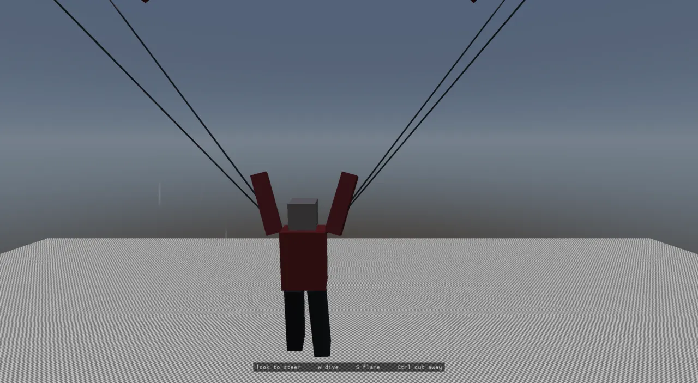
The grapple and the rope
The grapple is slot 6. Hold fire: the hook flies at 140 m/s to where it was aimed and bites if the trigger is still
held; let go and you fly on with what the swing gave. findGrappleAnchor takes the aim itself if it meets
something static 3–60 m away above the eye, else the best of two rings of eight rays within 9°, near the aim first.
That snap is what makes swinging easy: aimed 5° over a beam, it still catches the beam (ADR-0230).
The swing is one exact constraint, not a chain of bodies:
Vec3 next = pos + v * dt;
Vec3 out = next - anchor;
const Real d = out.length();
if (d > length && d > 1e-6) {
// held on the sphere: the position projected back, the speed away from the anchor removed
const Vec3 n = out * (1.0 / d);
next = anchor + n * length;
const Real away = dot(v, n);
if (away > 0) v = v - n * away;
}
pos = next;
return v;
}
A rope pulls and never pushes, and it adds no energy: from level, the bottom of the swing is √(2gL) and the body
never climbs above where it began (tested, after the wingsuit's lesson). The mode then moves the capsule there with
moveCharacterFree, so walls take the speed off honestly. With grappleStretch > 0 (2% by
default) the same function first applies a damped spring past the length, stepped implicitly, damping ratio
grappleBounce 0.4, never past 4× the stretch (ADR-0238).
The rope you see is separate: RopeLine, 24 Verlet points whose links pull but never push, with
long-range limits from both pinned ends and each point swept against the world so a slack rope lies over a ledge.
Jolt 5.5's soft bodies were considered, but their edge lengths are fixed when made and a grapple reels every step.
The pose carries the points; PlayerArmsSystem draws them from the hand.
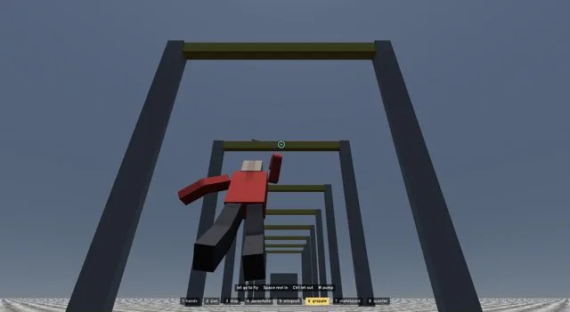
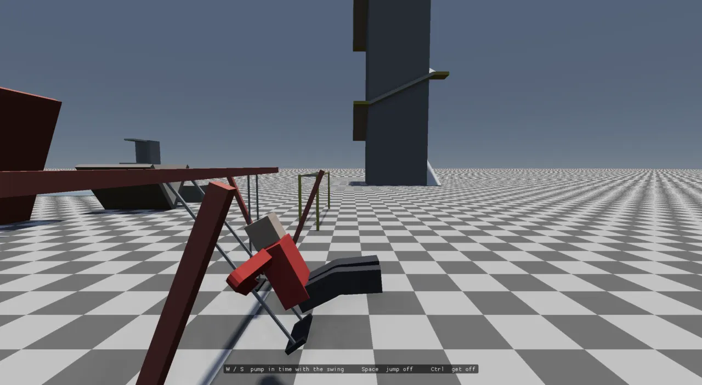
Hooked from the ground was the hard case: a taut rope from standing gave nothing to swing. Now a hop and a straight pull reel down to the length whose swing clears the ground, then the reel takes up slack until the body swings outward and the rope catches it.
Boards and the playground
Slots 7 and 8 hold a skateboard and a scooter. With one in hand, standing on the ground is riding
(BoardMode, entered from OnFootMode::leave). boardStep carves at the tighter of
150°/s and the grip (7 m/s²) over the speed, so a fast board turns wide; W kicks (+1.8 m/s, one per 0.5 s, toward
8.5 m/s, the scooter 7); the slope pulls it downhill. Jump ollies at 3.8 m/s up. Measured on the lab's skate run:
5.9 m/s kicked on the deck, 9.1 m/s at the foot of the ramp (ADR-0234). The swing and the monkey bars
(ADR-0237) pin the capsule to a pendulum's seat or a point under the bar line; the city's playgrounds aren't wired
yet because their equipment is baked into the lot meshes.
The one impact rule
Four modes used to decide a crash four ways: a landing over 15 m/s down, the rope losing 14 m/s in a step, a board stopped short above 6.5 m/s, a wingsuit touching down over 20 m/s (a canopy never crashed). ADR-0247 made it one rule: a mode reports the velocity it meant and the one the world let it get, and only the speed lost along the way it meant to go counts.
The rule in one picture. Past the current mode's impactTolerance the body goes limp.
inline Real speedLost(const Vec3& meant, const Vec3& got) {
const Real m = std::sqrt(meant.x * meant.x + meant.y * meant.y + meant.z * meant.z);
if (m < 1e-6) return 0;
const Real kept = (got.x * meant.x + got.y * meant.y + got.z * meant.z) / m;
return m - std::max(Real(0), kept);
}
bool PlayerBody::impact(BodyStep& s, const Vec3& meant, const Vec3& got, const char* what) {
const Real m = meant.length();
if (m < 1e-6) return false;
const Vec3 dir = meant * (1.0 / m);
// ONE CONTACT, NOT ONE STEP: a body that meets a wall part way through a step loses only that part, and the rest
// the step after (a scooter at 7 m/s: 4.6, then 2.3 -- neither past 6.5). Losses in consecutive steps add up.
constexpr Real kStillMoving = 0.5; // m/s lost in a step that is not a contact
const Real lost = speedLost(meant, got);
contactLoss_ = lost > kStillMoving && lastLossStep_ + 1 == steps_ ? contactLoss_ + lost : lost;
lastLossStep_ = lost > kStillMoving ? steps_ : 0;
if (contactLoss_ <= mode_->impactTolerance(*this, dir)) return false;
const Real total = contactLoss_;
contactLoss_ = 0;
char buf[96];
std::snprintf(buf, sizeof(buf), "%s at %.0f m/s", what, std::max(m, total));
goLimp(s, mode_->thrown(meant, got, dir), buf);
return true;
}
The "one contact" sum came from a trace: a scooter at 7 m/s hit a wall part way through a step and lost 4.6 m/s,
then 2.3 the next, so neither step alone passed 6.5. The defaults: tolerance limpImpact 14 m/s (about a
10 m fall), thrown at what was kept plus 0.3 of what was lost. A board going along uses boardCrash and
throws you over the front (0.7 × meant, +2.5 m/s up). A glide is judged against what a touchdown leaves (running on at
0.4 of the horizontal), not against the step's own motion: measured on the step, a 60° dive into the ground at 35 m/s
read as a landing.
The drawn body: PlayerPose, BodyPose, ten parts
Three structures sit between "the body is climbing" and pixels. PlayerPose is a component written once a step: the mode, where the hands hold, cycles and phases, the rope's points, counters of things that happened, and the ragdoll's part transforms. BodyPose is a person's posture: a position, an orientation and scale, a direction and a fold (radians) per limb, and a neck turn. BlockBody is the ten boxes those become.
From pose to blocks. PlayerBodySystem turns the PlayerPose into a BodyPose (which way to
face, a lean, hands put on holds by IK); poseBlocks solves each limb; the result is drawn (torso and
head as boxes, each limb one skinned tube) or handed to Jolt as a ragdoll. Dots are the joints; the figure is drawn
to scale from BlockBody::parts().
const std::array<BlockBody::PartSpec, BlockBody::kParts>& BlockBody::parts() {
// procgen/person.cpp's blocks: legs from the hips (y -0.05), arms from the shoulders (y 0.50), the head on the
// neck (y 0.57), the torso up from the pelvis. Each limb is its old block cut in two: the arm's 0.62 m at the
// elbow (0.31 + 0.31), the leg's 0.85 m at the knee (0.43 thigh + 0.42 shin).
static const std::array<PartSpec, kParts> p = {{
{Vec3(0.44, 0.60, 0.26), Vec3(0, -0.05, 0), Vec3(0, 0.30, 0), -1}, // torso
{Vec3(0.26, 0.26, 0.26), Vec3(0, 0.57, 0), Vec3(0, 0.13, 0), Torso}, // head
{Vec3(0.12, 0.31, 0.16), Vec3(0.29, 0.50, 0), Vec3(0, -0.155, 0), Torso}, // left upper arm (+x)
{Vec3(0.12, 0.31, 0.16), Vec3(-0.29, 0.50, 0), Vec3(0, -0.155, 0), Torso}, // right upper arm
{Vec3(0.17, 0.43, 0.22), Vec3(0.115, -0.05, 0), Vec3(0, -0.215, 0), Torso}, // left thigh
{Vec3(0.17, 0.43, 0.22), Vec3(-0.115, -0.05, 0), Vec3(0, -0.215, 0), Torso}, // right thigh
{Vec3(0.12, 0.31, 0.16), Vec3(0.29, 0.19, 0), Vec3(0, -0.155, 0), ArmL}, // left forearm, from the elbow
{Vec3(0.12, 0.31, 0.16), Vec3(-0.29, 0.19, 0), Vec3(0, -0.155, 0), ArmR}, // right forearm
{Vec3(0.17, 0.42, 0.22), Vec3(0.115, -0.48, 0), Vec3(0, -0.21, 0), LegL}, // left shin, from the knee
{Vec3(0.17, 0.42, 0.22), Vec3(-0.115, -0.48, 0), Vec3(0, -0.21, 0), LegR}, // right shin
}};
return p;
}
struct BodyPose {
Vec3 position; // the capsule centre (world)
Quat orientation; // the body's facing and lean
Real scale = 1; // (capsule half height + radius) / 0.9
Vec3 armL{0, -1, 0}, armR{0, -1, 0}, legL{0, -1, 0}, legR{0, -1, 0};
Real elbowL = 0, elbowR = 0, kneeL = 0, kneeR = 0;
Quat neck = Quat::identity(); // the head turned on the neck (body frame): a nod, a snap in a crash
Vec3& dir(int limb) { return limb == 0 ? armL : limb == 1 ? armR : limb == 2 ? legL : legR; }
const Vec3& dir(int limb) const { return limb == 0 ? armL : limb == 1 ? armR : limb == 2 ? legL : legR; }
Real& bend(int limb) { return limb == 0 ? elbowL : limb == 1 ? elbowR : limb == 2 ? kneeL : kneeR; }
Real bend(int limb) const { return limb == 0 ? elbowL : limb == 1 ? elbowR : limb == 2 ? kneeL : kneeR; }
};
A limb's direction is the way from its shoulder or hip to its hand or foot; the fold is the elbow's or knee's.
solveLimb is the two-bone solve (law of cosines at the root, the joint pointing toward a pole:
kneecaps forward, the point of the elbow back). reachTo is the inverse, two-bone IK:
void reachTo(BodyPose& pose, BlockBody::Part limb, const Vec3& world) {
const int k = limb - BlockBody::ArmL;
if (k < 0 || k >= BlockBody::kLimbs) return;
const BlockBody::PartSpec& p = BlockBody::parts()[static_cast<std::size_t>(limb)];
const Vec3 joint = pose.position + pose.orientation.rotate(p.joint * pose.scale);
pose.dir(k) = reachToward(pose, limb, world);
const Real a = partLength(limb) * pose.scale, b = partLength(BlockBody::lower(k)) * pose.scale;
const Real c = std::clamp((world - joint).length(), std::fabs(a - b) + 1e-4, a + b);
// the fold that makes the halves span c: c^2 = a^2 + b^2 + 2ab cos(bend)
pose.bend(k) = std::acos(std::clamp((c * c - a * a - b * b) / (2 * a * b), Real(-1), Real(1)));
}
Each upper half's frame has its x along the hinge axis and the lower half is that frame turned about x by the fold.
So a ragdoll's fold reads straight back from physics (foldOf), and the skin can bend about one axis.
skinnedLimb draws a limb as one tube with nine rings round the joint, each ring rotated about
the hinge by its smoothstepped share of the fold. For a one-axis joint that is what dual-quaternion skinning does:
rotating instead of blending corners keeps the joint's thickness instead of pinching it (the "candy wrapper").
Topology is fixed for every fold, and BodyMeshes keeps one tube per 2.5° of fold, made on first use
(ADR-0245).
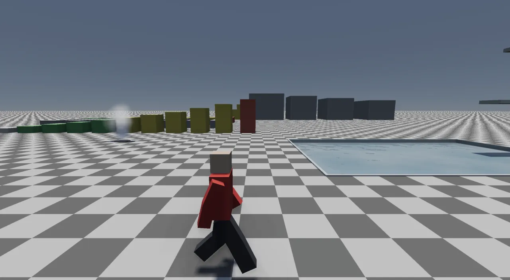
drawnAsBlocks is false for Walk and Air), which since ADR-0245 strides and jumps with bent knees.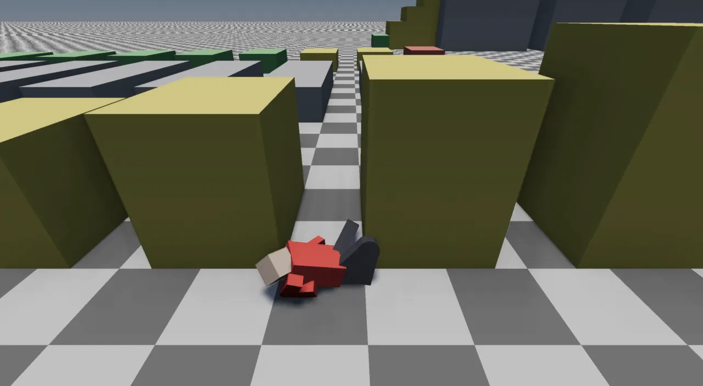
Not everything uses this body. Walking and falling in third person are still the walker mesh and its walk cycle
(citysim's CityPlayerBodySystem; drawnAsBlocks decides), first person draws its own box
arms (PlayerArmsSystem), and the far crowd keeps the six-block buildStandingPerson (144
vertices, so the 515k-agent crowd costs what it did).
Ragdolls
goLimp builds a BodyPose where the capsule is, calls blockRagdoll and
PhysicsWorld::addRagdoll (Jolt's Ragdoll), and enters RagdollMode. The parts are 67 kg (torso 30), joined
by swing-twist joints at the neck (35°), shoulders (85°) and hips (60°), and by hinges at the elbows and knees
that fold one way only, up to 143° and 149°. Hinge friction (elbow 1.5, knee 5 N·m) is required: without it every
joint of a thrown body folded fully shut, measured (ADR-0232, ADR-0245). While limp the view goes outside;
the body gets up after 1.2 s lying still, on jump once slowed, or at once in water, with the capsule stood over the
torso and lifted until characterFitsAt says it fits.
Townspeople get the same ragdoll (ADR-0233): WalkerRagdolls in citysim throws a walker hit by a
car at 0.8× the car's speed plus a lift. The cost is bounded twice: only walkers with a physical body can be hit, and
at most six are limp at once (a seventh recycles the one down longest).
Vehicles: bikes, drift, and the driver's seat
Driving is outside the body machine: with InVehicle on the player, PlayerSystem skips the
body step and VehicleSystem owns the capsule. Three player-facing additions sit there:
- Two-wheelers (ADR-0235):
two_wheeler = truein avehicles.luarecipe builds Jolt's MotorcycleController. Its lean spring defaults (5000/1000) flipped our narrow bike on touchdown (40° in four frames), so stiffness and damping are sized from the bike's own mass and box. The bicycle freewheels via near-zero engine damping. Measured: motorcycle 79 km/h leaning 28°, bicycle 25 km/h. - Drift (ADR-0236): handbrake while steering past 30% above 40 km/h;
PhysicsWorld::applyDriftscales the sideways tyre grip through Jolt's per-wheel impulse callback (rear 35%, front 90%), a yaw torque holds the slip the steering asks for, and the slide banks boost. Player's car only. - The driver's seat (ADR-0252): one crash measure for any vehicle, the seat's jolt.
Real RideJolt::step(const Vec3& velocity, Real dt, Vec3* before) {
clock += dt;
samples.push_back({clock, velocity});
while (!samples.empty() && samples.front().t < clock - kWindow) samples.erase(samples.begin());
Real most = 0;
Vec3 was = velocity;
for (const Sample& s : samples) {
const Vec3 d = velocity - s.v;
const Real j = std::sqrt(d.x * d.x + 0.25 * d.y * d.y + d.z * d.z);
if (j > most) { most = j; was = s.v; }
}
if (before) *before = was;
return most;
}
Real ejectTolerance(bool twoWheeler, bool openSeat, bool windscreen) {
if (twoWheeler) return 7.0;
if (openSeat) return 11.0;
return windscreen ? 22.0 : std::numeric_limits<Real>::infinity();
}
The jolt is the most the velocity vector changed over 0.3 s, vertical at half (a 2 m drop on a bike is a
ride). A two-wheeler throws you past 7 m/s, an open seat (a convertible) past 11, a closed car only through the
windscreen past 22 (on by default; set vehicle.windscreen false). Whatever stays in the seat sways in
it: SeatSway springs the shoulders (~0.8 s, stopped by the belt at 0.32 m) and, quicker, the head.
VehicleSystem writes PlayerPose::Mode::Drive, and PlayerBodySystem::render poses the
jointed body with seatedPose from the vehicle as drawn that frame, because VehicleSystem moves
the car after the body system's fixed step. Measured against the lab's jump tower: the convertible threw its driver
at 48 km/h (jolt 13.3), the motorcycle at 29 km/h (8.1), the sedan kept its driver.

seat table (SeatGeometry).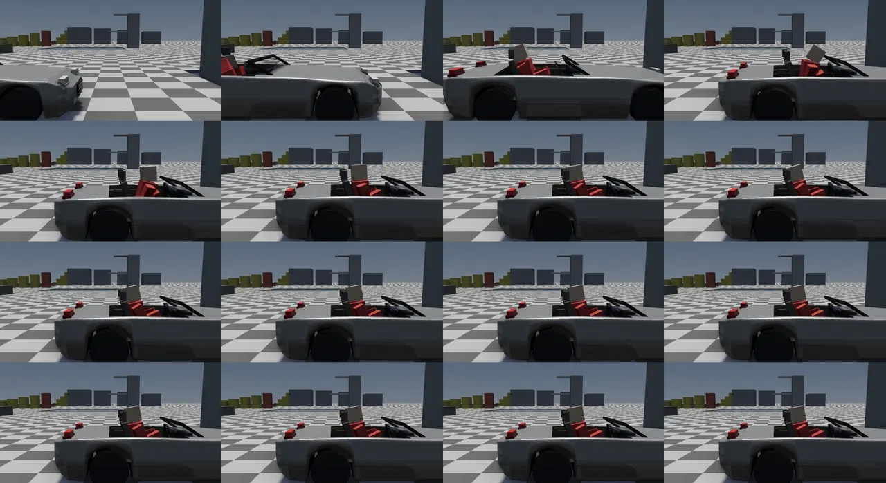
The hand-off to the ragdoll goes through Settings: VehicleSystem writes player.limpVelocity and
player.limp, and the next body step reads them as a limp intent.
const bool hit = jolt > ejectTolerance(v->config.twoWheeler, v->openSeat, ctx.settings.getBool("vehicle.windscreen", true));
if (!down && !hit) return;
const Vec3 thrown = hit ? ejectThrow(before, true) : ejectThrow(vel, false);
jolt_.reset();
v->driver = Entity{};
if (CharacterController* cc = ctx.world.get<CharacterController>(player)) {
// off the seat and clear of the body: the capsule's feet just over its top (a convertible's doors are a
// box round the seat)
Vec3 at = rt->position + rt->orientation.rotate(v->hipPoint());
at.y = std::max(at.y + 0.9, rt->position.y + v->config.chassisHalfExtent.y + 0.95);
physicsSys.physicsWorld().setCharacterPosition(cc->characterId, at);
if (Transform* pt = ctx.world.get<Transform>(player)) pt->position = at;
}
cameras.clearFollowTarget();
ctx.world.remove<InVehicle>(player);
char buf[96];
std::snprintf(buf, sizeof(buf), "%.3f %.3f %.3f", thrown.x, thrown.y, thrown.z);
ctx.settings.setString("player.limpVelocity", buf);
ctx.settings.setDouble("player.limp", 1.0);
Riding a carrier
A passenger on a bus, in a cab or on a train is a Passenger: a point in the carrier's own frame
(ADR-0243). The owning system keeps its rules (boarding, aisles, seats, doors) and calls rideStep
each fixed step to pin the capsule and turn the view with the carrier. The finding that shaped it is the frame's
order:
A camera framed in the update is a frame of travel behind on a moving carrier. Placing the rider in render, between the carrier's last two steps by this frame's interpolation, matches how the vehicle is drawn.
// the carrier as drawn: between its last two steps by this frame's interpolation (the renderer's blend of the // vehicle's instances -- InstanceGroup::ids -- and of every entity's PrevTransform) const Real a = std::clamp(ctx.interpolation, 0.0, 1.0); Mat4 drawn = p->carrier; for (int r = 0; r < 3; ++r) for (int c = 0; c < 4; ++c) drawn.m[r][c] = p->carrierPrev.m[r][c] + (p->carrier.m[r][c] - p->carrierPrev.m[r][c]) * a; const Vec3 at = riderCentre(drawn, p->local, p->eyeAbove); t->position = at; if (PrevTransform* prev = ctx.world.get<PrevTransform>(rider)) prev->value = *t; // drawn where it is put
Measured on river_town's bus 41 (camera jerk in the bus's frame): first person ~15 mm before, 0.00 mm after; third person 2.10 → 2.12 mm, because carrying the shoulder rig as well overshot (71 mm) and it is left as framed.
Hands, tools, the light, input layers, the watch
enum class Tool : uint8_t { Hands = 1, Gun, Map, Parachute, Wingsuit, Grapple, Skateboard, Scooter };
constexpr int kToolSlots = 8;
PlayerHands holds the tool in hand and the grapple's hook (None, Flying, Hooked, Loose), which flies and
comes back whatever the body is doing. The light is not a tool (ADR-0249): it used to be slot 4, and
cycling past it with LB switched it on. It is now its own action (L, D-pad up), held in the hand, under the gun's
barrel, or as a headlamp, whatever is in hand.
Input layers (ADR-0248): a screen that takes the controls pushes a layer, and while one is up the body's actions and the view's go dead:
bool InputMap::live(const std::string& action) const {
const auto layer = actionLayer_.find(action);
if (layer != actionLayer_.end()) return !layers_.empty() && layers_.back() == layer->second;
const InputContext c = actionContext(action);
if (c == InputContext::Always) return true;
if (!layers_.empty()) return false; // a layer has the controls
return c == InputContext::Camera || c == context_;
}
The map is the first layer: the stick pans, E/Q zoom, A/Space marks an engine::Waypoint. Measured: W
held for 1 s walked 5.9 m with the map down and 0.0 m with it up. The first key choices clashed with
Always keys (+/- are sim speed, Enter pause), which the startup
clash report and a probe both caught.
UI text (ADR-0250): UiText bakes glyph atlases (Overpass Bold, one per pixel height) and
emits quads on the game UI layer, so the tool row, prompts and the watch are no longer drawn by ImGui (the developer
overlay). submitUi now appends, up to 16384 quads. The watch (ADR-0251): hold Q / D-pad down
and, with a hand free, the left wrist comes up; the dial (compass turning with the heading, the waypoint as a gold
dot with its distance, else the sky's clock) is drawn on the UI layer and mapped corner by corner onto the drawn
watch face in first person, or as a panel by the character in third.
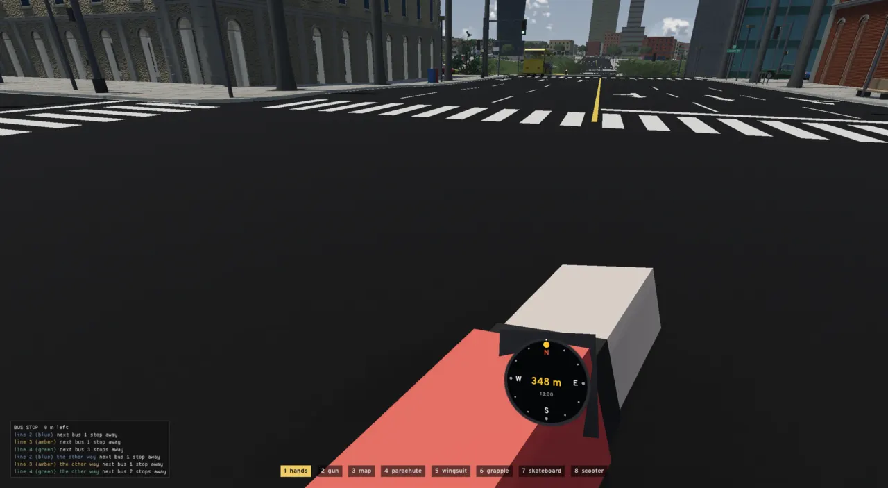
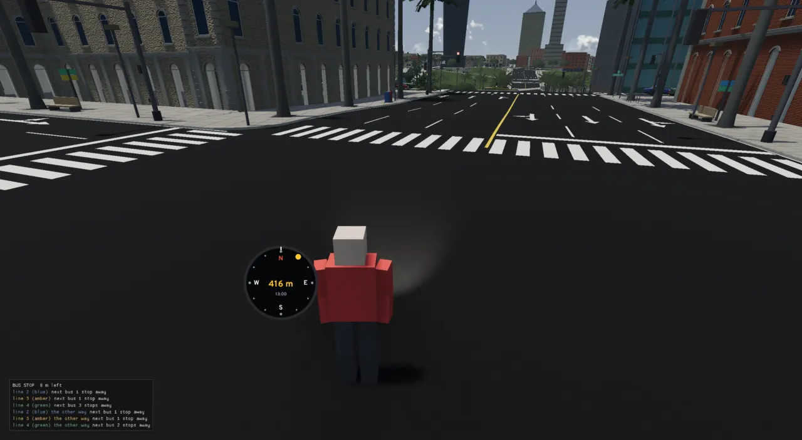
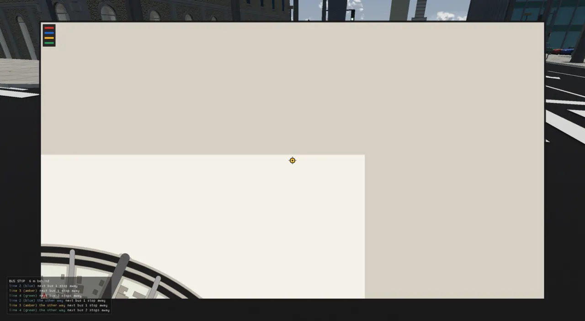
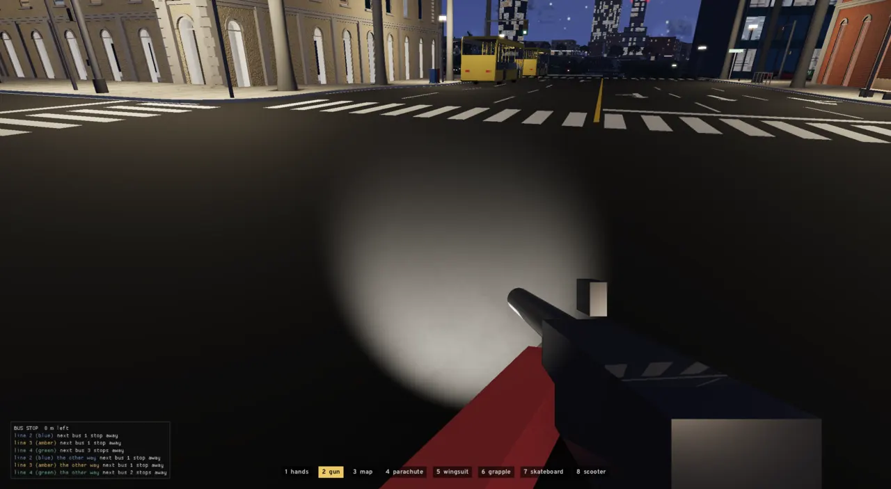
| handsFree | Modes | What it allows |
|---|---|---|
| 2 | on foot, skateboard | the gun (the gun script's camera.hands_free()), the watch |
| 1 | parachute, grapple, scooter | the watch |
| 0 | climb, ladder, mantle, bars, swing, swim, wingsuit, limp, driving | neither |
Particles and sounds: counters on the pose
The body never plays a sound or spawns a particle by calling an audio or render system. It counts things
that happened (grabs, ollies, boardLands, hookBites,
ropeSnaps, chuteOpens) and publishes the counts; MotionAudioSystem
edge-detects them and plays the one-shots (the hook's shot and bite, the canopy's WHUMP, a hand grabbing rock or a
metal bar). Particles are effects named in assets/scripts/particles.lua and requested by name
(requestParticles(world, "spark", at, dir)) from PlayerBody::effects: dust off a board
kick, sparks where the hook bites, a splash, bubbles and breaths under water, streaks under a canopy
(ADR-0238, ADR-0239, ADR-0244). The car's tyre smoke comes from VehicleSystem's
measureSlide the same way.

Vehicle::slide a second.Tuning, the lab, and the trace harness
MovementTuning (locomotion.h) holds every number above: 79 sliders and 2 flags, each with a
slider range and a group. PlayerSystem::fixedUpdate reloads it from Settings every step, so the
Debug > Movement panel, set movement.<key> <v> on the socket, and settings.json
(movement.*) all apply live:
void MovementTuning::load(const Settings& s) {
for (const Field& f : fields()) this->*f.value = s.getDouble(std::string("movement.") + f.key, this->*f.value);
for (const Flag& f : flags()) this->*f.value = s.getBool(std::string("movement.") + f.key, this->*f.value);
}
move? on the socket returns the telemetry PlayerSystem writes each frame: mode name, ground state,
position, velocity, stamina, tool slot, hook state, rope length/span/sag, and the last event ("pull up onto a ledge
1.24 m above the feet").
movement_lab (assets/levels/movement_lab.json, written by tools/movement_lab.py;
edit the script and re-run, never the JSON): ledges 0.3–3.0 m coloured by how you get up them, gaps 1–5 m, climbing
walls, slopes 30–70°, a tiled pool with 3 and 6 m boards, a 72 m jump tower with a spiral ramp, the playground, a
skate run, and a swing park of grapple gantries. Run it with
./build-viewer/viewer assets/levels/movement_lab.json.
The trace harness (tests/test_player_trace.cpp, in physics_tests) runs the real
PlayerSystem on movement_lab headless (NullRenderer, Jolt single-threaded, a scripted pad) through 17
scenarios, writing every fixed step's position, pose numbers, mode, ground, hook and last event. Runs are
bit-identical, which is what let the 1906-line system be split into modes with all traces reproduced to 1e-6.
s.push_back({"scooter_crash", 10.0, [](Rig& r) {
r.place(Vec3(-3.6, 0, 20.0), 0);
r.actions.injectPress("slot_8");
},
[](Rig&, Pad& p, Real t) {
p.stick(between(t, 0.2, 7.0) ? 1.0 : 0.0, 0);
p.run(true);
},
{"on the scooter", "bailed*"}});
| Variable | Effect |
|---|---|
RT_PLAYER_TRACE_OUT=<dir> | record each scenario's trace |
RT_PLAYER_TRACE_BASE=<dir> | compare step by step against a recording |
RT_PLAYER_TRACE_ONLY=<name> | run one scenario |
| (neither) | each scenario checks its expected events happened |
Scenarios: walk_jump, mantle_ground, mantle_air, climb, wall_jump, swim, plunge, parachute, wingsuit, wingsuit_crash, hard_fall, grapple, skateboard, scooter_crash, swing, bars, limp. The ladder is not covered (the lab has none).
How it got here
All of this was built on 24 and 25 October 2026, each step an ADR, and reached main as #116 at the pinned commit:
| ADR | What changed | Turning point |
|---|---|---|
| ADR-0228 | JumpGate, ledges, climbing, buoyant swim, block arms, MovementTuning, movement_lab | the stuck jump measured as a steep-ground refusal |
| ADR-0229 | parachute and wingsuit | three wrong lift models; fall net only with nothing below |
| ADR-0230, ADR-0238 | grapple; the drawn Verlet rope; a rope that gives; motion sounds | Jolt soft bodies can't reel |
| ADR-0231–ADR-0233 | third-person six-block body; player and walker ragdolls | one body, posed or limp |
| ADR-0234–ADR-0237 | boards, two-wheelers, drift, playground | Jolt's lean spring sized to our bikes |
| ADR-0239, ADR-0244 | particles as data; the 1.8 m player | the first cut was six hard-coded kinds, reshaped before landing |
| ADR-0243 | one way of riding | update/steps/render order |
| ADR-0245 | ten parts, two-bone IK, hinged ragdolls, skinned limbs | hinge friction, or every joint folds shut |
| ADR-0246 | intent + modes; PlayerSystem 1906 → ~620 lines | 16 traces reproduced exactly |
| ADR-0247 | one impact rule | losses summed over one contact |
| ADR-0248–ADR-0251 | input layers, tools enum and light switch, UiText, the watch | keys moved off ImGui |
| ADR-0252 | driver's seat jolt, ejection, seat sway | a speed-only rule missed side hits |
Owed, per the ADRs: the rope wrapping corners for the swing itself; building handholds; skate tricks and grinds; the city's playgrounds; a walk/run that blends into the posed body instead of switching meshes; passengers that sway or get thrown; a camera kick in crashes; GPU skinning with animation clips; the seated AI occupant moved onto the jointed body.
Where to look
- src/engine/player/player_body.h — BodyMode, the modes, PlayerBody (the machine)
- src/engine/player/player_body.cpp — step order, the ways into a mode, impact, effects, publish
- src/engine/player/player_modes_foot.cpp — on foot, swim, ladder, mantle, climb
- src/engine/player/player_modes_gear.cpp — glide, grapple, board, swing, bars, ragdoll
- src/engine/player/player_intent.h, src/engine/player/player_hands.h, src/engine/player/tools.h
- src/engine/player/body_rules.h — fall net, air momentum, SwimState, speedLost
- src/engine/player/driver_seat.h, src/engine/player/seat_geometry.h — RideJolt, SeatSway, seatedPose
- src/engine/locomotion.h — MovementTuning, JumpGate, findLedge, MantleMove, glide, rope, board, swing steps
- src/engine/player_pose.h — PlayerPose
- src/engine/block_body.h, src/engine/body_draw.h — ten parts, BodyPose, IK, skinned limbs, ragdoll
- src/engine/rope_line.h, src/engine/riding.h
- src/engine/physics/physics_world.h — the character and ragdoll API
- src/engine/systems/player_system.cpp — intent, camera, HUD,
move?, Debug > Movement - src/engine/systems/player_body_system.cpp, src/engine/systems/player_arms_system.cpp — third- and first-person drawing
- src/engine/systems/vehicle_system.cpp —
stepSeat - src/engine/input/input_map.h, src/engine/ui/ui_text.h, src/engine/wrist_watch.h, src/engine/systems/watch_system.cpp, src/engine/systems/flashlight_system.cpp
- src/apps/citysim/walker_ragdolls.h — the pool of six
- tests/test_locomotion.cpp, tests/test_driver_seat.cpp, tests/test_player_trace.cpp, tests/test_two_wheelers.cpp, tests/test_drift.cpp
- tools/movement_lab.py — the lab level's generator
| Switch | What it does |
|---|---|
| Debug > Movement | every MovementTuning slider, live; Save to settings.json |
set movement.<key> <v> | the same over the socket |
move? | body telemetry |
ragdoll / G | go limp |
knock, knock? | throw the nearest walker; list the limp ones |
hold MouseLeft <s> | hold fire for probes (the grapple) |
vehicle_spawn <recipe>, vehicle? | spawn a bike or car; drift/slip/boost state |
set vehicle.windscreen false | closed cars never eject |
RT_AUDIO=null | a probe viewer without the speakers |